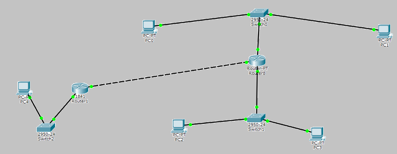
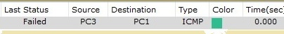
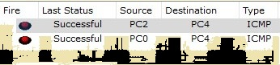

Лабораторная работа #3
Ход работы:1. Первым делом нужно рассчитать IP адрес.
2. Далее настроим адресацию на добавленных компьютерах (разместим два компьютера и коммутатор. Настроим между ними адресацию).
3. Выполняем проверку работоспособности созданой сети.

4. Добавляем на рабочее поле новый коммутатор с двумя компьютерами.
5. Настроим адресацию из другой подсети.

6. Соединяем коммутаторы между собой и опять же проверяем работоспособность сети.
7. Настраиваем интерфейсы маршрутизатора. Проверяем работоспособность.

8. Проверяем работоспособность сети. Отправляем сообщение из А в В, а далее из В в С.

9. Настройка статической маршрутизации осуществлялась с помощью команд:
show ip protocols – выводит расширенную информацию об используемых протоколах маршрутизации;
ip route [сеть назначения] [маска] [маршрут] – добавляет в таблицу маршрутизации статический маршрут до указанной сети назначения.
Banner motd [баннер] – определяет баннерное сообщение.
Все задачи, поставленные в лабораторной работе, выполнены.